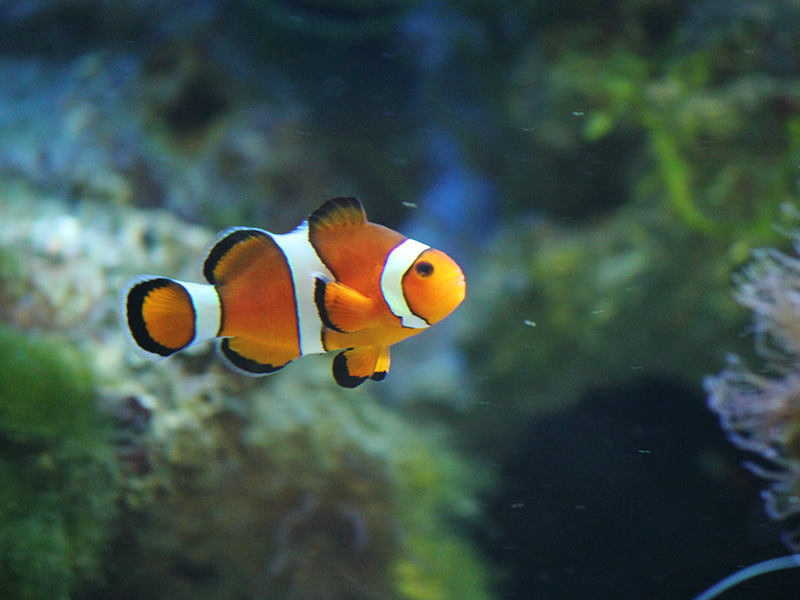

Descripción del Pez
Los peces son un grupo diverso de animales acuáticos que se encuentran en océanos, ríos y lagos de todo el mundo. Con más de 30,000 especies diferentes, varían en tamaño, forma y color. Su adaptación a la vida acuática les permite sobrevivir en una variedad de hábitats, desde los profundos océanos hasta las aguas dulces de los ríos.
Los peces tienen un cuerpo hidrodinámico que les permite nadar con facilidad. Utilizan sus aletas para moverse y cambiar de dirección, mientras que las branquias les permiten extraer oxígeno del agua. A medida que el agua pasa a través de las branquias, los peces pueden respirar y mantenerse activos.
Algunas especies de peces son migratorias, viajando grandes distancias para reproducirse o encontrar alimento. Por ejemplo, los salmones nacen en agua dulce, pero migran al océano antes de regresar a su lugar de nacimiento para reproducirse. Este ciclo de vida es fundamental para la supervivencia de muchas especies.
Los peces también son una fuente vital de alimento para los humanos y otros animales. Su diversidad no solo enriquece los ecosistemas acuáticos, sino que también contribuye a la cultura y la economía de las comunidades que dependen de la pesca.
